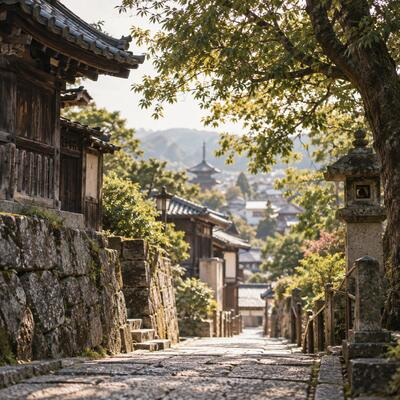
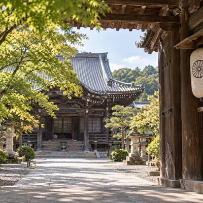
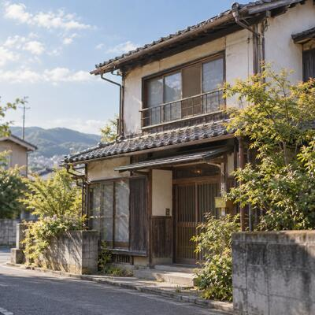
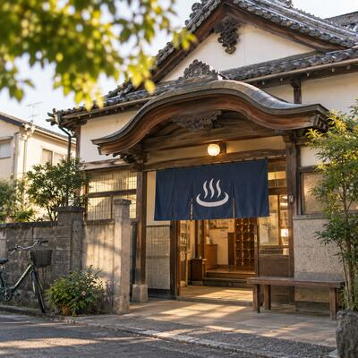
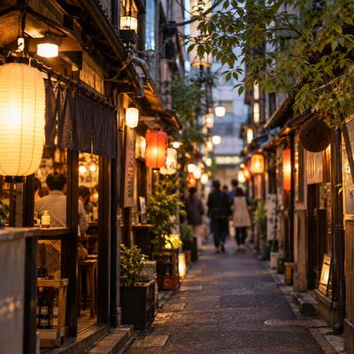
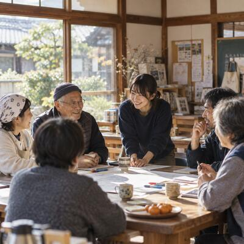

01
LOCAL EDITING
地域資源編集
地域では当たり前になっているものを見つけ、新しい意味や役割へ編集します。使われ方を一つ変えるだけで、そこは人が集まる場所になります。
- 寺院 × 交流
- 祭り × 地域経済
- 銭湯 × イベント
- 横丁 × メディア
- 文化 × インバウンド
- 遊び × 教育
丁寧に縁をつなぎ、賑わいを創る。
人・場所・文化・遊び・食・祭り。
地域にすでにある魅力を見つけ、編集し、
体験・商品・メディア・場所としてカタチにします。
人、場所、文化、祭り、遊び、食、暮らし。地域にすでにある魅力を見つけ、別の意味へ編集し、体験・商品・メディア・場所としてカタチにする。交樂庭は、地域に眠る可能性から小さな商いと新しい賑わいを生み出す会社です。








見慣れた風景に名前をつけ、
別の意味を与える。
そこから、商いがはじまります。
浦野家の先祖が、喜多見の地図を描く。
人流を生むため、駅の建設に土地を譲る。
交樂庭として、地域にあるものを商いに変える。
交樂庭は、世田谷区喜多見に400年住み継いできた家から生まれた会社です。実家の庭に人が集まり、話し、また来る。その繰り返しの中に、地域の価値は最初から存在していました。
地域の魅力は、最初から大きく存在するものではありません。小さな動きや、わずかな気配、誰かの何気ない想いの中に眠っています。交樂庭は、それを見つけ、意味を与え直し、誰かが参加できるかたちにするところまでを仕事にしています。
地域資源を編集し、体験にし、届け、自分たちでも場所を持って試す。交樂庭の仕事は、大きく4つです。
地域資源編集
地域では当たり前になっているものを見つけ、新しい意味や役割へ編集します。使われ方を一つ変えるだけで、そこは人が集まる場所になります。

体験・コンテンツ開発
地域資源を、参加できるかたちへ変換します。
地域商社・メディア
地域の魅力を紹介するだけで終わらせません。集めて、編集して、発信して、人を動かし、商流をつくるところまでを担います。

場所を持ち、試す
交樂庭は、自ら場所を持ち、地域で小さく実験します。喜多見を主なフィールドに、寺院・集合住宅・店舗・銭湯・祭り・地域コミュニティを使って、企画→実験→商いを繰り返しています。
自社メディア ｜ YOKOCHO NAVI 先行公開中
今夜、知らない横丁へ。
横丁は、暖簾をくぐった人だけが出会える、小さな縁と物語の宝庫。けれど「今日そこで何が起きているか」は、路地の外までなかなか届きません。
ヨコチョナビは、横丁の開業やイベントの情報を出典付きで集め、横丁の物語とあわせて編集・発信し、今夜の一軒へ人を動かす横丁ガイド。交樂庭が自ら運営する独立系メディアです。
7つの質問で、あなたの横丁タイプと今夜くぐりたい横丁が見つかる「ヨコチョ診断」も公開中です。
全7問 ／ 約1分
現在は制作途中のものを先行公開しています。 掲載横丁の拡充と、運営者さまへの掲載許諾を順に進めています。ご意見も歓迎です。
けん玉は、成功も失敗もその場で見えて、何度でもやり直せる遊び。交樂庭はこの特性を、学びの時間として編集しています。うまくいかない時間をどう過ごすか、人の挑戦をどう応援するか。技より先に、心の知恵が育つ場をつくります。親子の時間から地域イベント、訪日の方の文化体験まで、目的に合わせて組み立てます。
どの領域に当てはまるか、決まっていなくて大丈夫です。 「こんなことができないか」という段階のご相談から、いちばん多くご一緒しています。企画が固まる前の壁打ちも歓迎です。
地域には、まだ知られていない物語があります。交樂庭では、地域の人・文化・場所にある背景を丁寧に拾い、映像や言葉、体験などを通じて、その魅力が伝わるカタチへ編集します。
映像は、私たちが地域を編集するための
手段のひとつです。
見つけて終わりにも、つくって終わりにもしません。小さく試し、続くかたちに育てるところまでを、ひと続きの仕事として引き受けます。
人・場所・文化・想い・遊び・食。地域で当たり前になっているものの中から、まだ名前のついていない価値を見つけます。
既存の資源に、新しい意味と役割を掛け合わせます。寺院 × 交流、祭り × 地域経済、遊び × 教育のように。
体験・商品・メディア・場所として、人が参加できる／買える／訪れられるかたちに落とし込みます。
イベント・実証・販売・運営。まずは小さく実際にやってみて、反応を見ながら組み替えます。
事業・コミュニティ・関係・賑わいへ。一度きりで終わらせず、地域に残る商いとして続けていきます。
ふたたび、01 見つけるへ
一巡するたびに、人と場所と文化の縁が積み上がっていきます。
地域には、人と人、人と場所、人と文化の間に生まれる、目には見えない価値があります。交樂庭では、そうした関係の蓄積を「縁的資本」と呼んでいます。
縁が増えることで、新しい体験が生まれ、商いが生まれ、地域の賑わいが育っていく。交樂庭は、この循環を大切にしています。
丁寧に縁をつなぎ、賑わいを創る。
寺は、仏教の信仰を通じて、人々が心穏やかに人生を送るための存在であると同時に、人と人とのつながりを育み、地域にゆるやかな交流を生み出す場でもあると考えています。静けさを大切にしながら、人と人が自然に交わる“余白”をつくっていく。寺と地域商社だからこそできる役割があると思っています。
— 副住職（浄土宗 慶元寺）地域にあったものを見つけ、どう編集し、何のカタチにしたのか。小さく試した結果とあわせてご覧ください。
地域の祭りを「来る祭り」から「滞在する祭り」へ。

祈りの場を、朝の体験の場に。
見学ではなく、身体で覚える日本文化へ。
写真では伝わらない回遊性を、飛んで見せる。

茶屋街の文化を、買える体験に。
近いケースがあれば、もう少し詳しくお話しします。 予算・体制・期間まで含めて、実際にどう進めたのかをお伝えできます。同じ形でなくても、組み替えてご提案します。
思想を語るだけではなく、自分たちのまちで試す。交樂庭は、喜多見をフィールドに、地域資源を使った小さな実験を重ねています。
喜びが多く見える街、喜多見。
ここで得た知恵を、
それぞれの地域に合わせて、
もう一度編集する。
喜多見で生まれたアイデアや経験を、そのまま別の地域へ持ち込むことはしません。
地域が変われば、人も文化も場所も違う。
だからこそ、その土地にあるものを改めて見つけ、
その地域らしいカタチへ編集していきます。
喜多見にある、洗練された静謐（せいひつ）な世界観。都心部からアクセス良好で、視察・オフサイト・撮影・体験プログラムの舞台としてご活用いただけます。


心を整え、静寂の中で行う写仏体験プログラム。初心者でも安心してご参加いただけます。@1,000円（税別）× 人数
副住職の導きのもと、念仏を唱えながら木魚を叩く体験。海外の方にも人気の、癒しとマインドフルネスを感じられる時間です。
豊洲の名店「鮨 晶（しょう）」による出張本格江戸前鮨。格式あるお寺で味わう、極上のおもてなし体験です。

四季折々の自然を背景に、カメラマンが最高の瞬間を撮影。和傘・法被を使い、日本らしさを演出します。
まずは、喜多見を見に来ませんか。 慶元寺の下見、オプション体験のご相談、視察のご希望など。現地をご覧いただくところからで構いません。
交樂庭が喜多見でつくりたいのは、
特別な施設や巨大なプロジェクトではありません。
祭り、寺、銭湯、商店、住宅、遊び、地域の人。
日常の中にある場所や文化をつなぎ直し、
子どもも大人も、遊びながら学び、
人と出会えるまちを目指しています。
その未来像を、 Learning City ～遊育～ と呼んでいます。
子どもが地域で遊び、大人が自分の得意を持ち寄り、
地域の文化や仕事が学びになる。
学校だけではない、まち全体が学びの場所になる。
そんな地域のあり方を、喜多見から少しずつ試しています。

1600年頃から世田谷区喜多見に居住する浦野家の15代目。実家の庭で家族・友人・地域の人・民泊ゲストが交わってきた原体験が、「交樂庭」という名称と思想の由来になっています。「楽しいが交わる機会をつくりたい」という想いのもと、地域の語り・日常・遊休資産に眠る価値を丁寧にすくい上げ、体験や商いへと編集しています。
喜多見で生まれ、浦野家で暮らしていたゴールデンレトリバーの女の子。人が大好きで、好奇心いっぱい。まちを歩きながら、人・場所・想い・物語を見つけて、みんなにつないでいく、交樂庭の看板犬です。
地域にこんな場所がある。面白い文化や人がいる。自社の商品と地域を掛け合わせてみたい。そんな段階から、ご相談ください。オンラインでの相談も可能です。